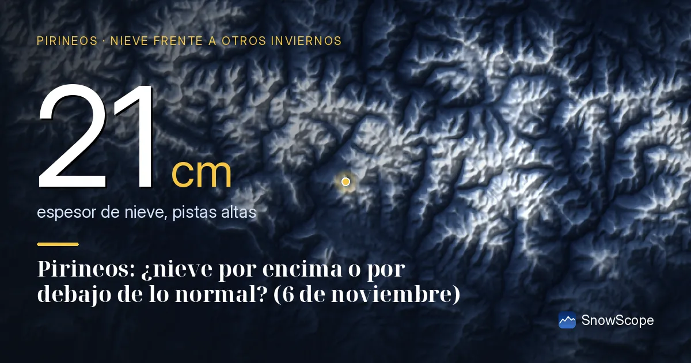

Pirineos: ¿nieve por encima o por debajo de lo normal? (6 de noviembre)
A principios de noviembre cayó nieve ligera en los Pirineos. Hemos comprobado cómo los espesores de hoy en cuatro estaciones se comparan con la misma fecha a lo largo de los últimos 46 inviernos. Solo Rasos de Peguera destaca por estar notablemente por encima de su media estacional.
Consulta la previsión de nieve en tiempo real de Aramón Cerler en la app SnowScopeEspesor de nieve, alertas de nieve polvo y mapa 3D, gratis.
¿Qué estación lleva ventaja?
Rasos de Peguera es la estrella. A 1 931 m, el espesor de nieve es de 4 cm, lo que es más profundo que en esta fecha en 44 de los últimos 46 inviernos. Normalmente, no hay nieve en absoluto a principios de noviembre a esta altura. Es un comienzo fuerte para una pequeña estación tan pronto en la temporada.
Las otras tres estaciones están cerca de su media histórica. Aramón Cerler tiene 0 cm a 2 060 m (normal: 1 cm); Gavarnie-Gèdre tiene 0 cm a 2 050 m (normal: 1 cm); Espot tiene 1 cm a 1 900 m (normal: 1 cm). Ninguna muestra una clara ventaja respecto a años anteriores.
| Estación | Espesor de nieve | Nieve nueva, 72 h | Previsto, próximos días | Cota máx. |
|---|---|---|---|---|
| Aramón Cerler | 21 cm | 2 cm | 1 cm | 2618 m |
| Rasos de Peguera | 20 cm | 3 cm | 0 cm | 2036 m |
| Gavarnie-Gèdre | 11 cm | 0 cm | 2 cm | 2283 m |
| Espot | 10 cm | 2 cm | 1 cm | 2290 m |

El espesor varía según la altura
Las pistas altas cuentan una historia diferente a la de las bases. Las pistas más altas de Aramón Cerler tienen 21 cm, el máximo de las cuatro; Rasos de Peguera tiene 20 cm; Gavarnie-Gèdre tiene 11 cm; Espot tiene 10 cm. Estos números son mucho más altos de lo que SnowScope muestra más abajo, donde queda poca o ninguna nieve.
En todo los Pirineos, 26 de 53 estaciones tienen nieve en sus pistas altas hoy. La región muestra 660 km² de cobertura de nieve, una huella modesta para principios de noviembre, distribuida principalmente por encima de 1 900 m donde el aire es lo suficientemente frío para conservarla.
Cómo llegó la nieve
La nieve llegó en dos pequeños eventos. El 4 de noviembre cayeron 1 a 3 cm, según la localización; el 5 de noviembre se añadió 1 cm más. Desde entonces, no ha llegado más nieve fresca. Estas capas finas son la base para los espesores de las pistas altas, aunque el terreno más bajo ya ha perdido lo que cayó.
Una estación en Cadí Nord (2 145 m), cerca de Rasos de Peguera, midió 2 cm el 2 de noviembre y ganó 1 cm en las 24 horas hasta esa fecha. Esta medición directa confirma que la nieve de principios de temporada aquí es real pero muy fina.
¿Qué viene después?
Para el 9 de noviembre, SnowScope prevé un poco más. Gavarnie-Gèdre recibirá 2 cm; Aramón Cerler y Espot esperan cada uno 1 cm. Rasos de Peguera no se prevé que gane nieve en este período. Los aumentos serán pequeños, así que los espesores de las pistas altas crecerán solo lentamente.
Atenta al nivel de congelación. El 6 de noviembre se sitúa entre 2 230 m y 2 670 m. Para el 8 de noviembre sube a 2 880–3 620 m. En Rasos de Peguera, cuya cima es 2 036 m, esto significa que la lluvia puede llegar a terrenos altos más tarde en el período, convirtiendo la nieve en aguanieve o lavándola si cae como lluvia en lugar de nieve.
¿Qué significa esto para los esquiadores?
La nieve de principios de temporada es frágil. Incluso 20 cm en pistas altas pueden ocultar rocas y terreno accidentado. La elección de pistas importa: las laderas orientadas al norte y los valles sombreados conservan la nieve más tiempo que el terreno orientado al sur, que se descongela rápidamente bajo el sol otoñal. Con este espesor, ceñirse a las pistas acondicionadas es el pasaje más seguro.
Los 4 cm de Rasos de Peguera a media altura no significan que la estación esté abierta; consulta su web para ver el estado de los remontes y las fechas de apertura. Lo mismo aplica a los otros. Nieve en el mapa no significa operación.
Cómo mantenerte informado
Las previsiones tan adelantadas pueden cambiar. Consulta el mapa de nuevo el día antes de que planees viajar para captar cualquier cambio. Activa una alerta de polvo fresco en la app SnowScope para cualquier estación que estés vigilando; se te avisará en cuanto caiga nieve fresca allí.
Consejos para esquiadores
- Sube alto y mira al norte: las pistas altas y los aspectos orientados al norte conservan la nieve temprana más tiempo. Las laderas orientadas al sur están finas o desnudas a mediodía.
- La nieve fina oculta peligros. Mantente en pistas marcadas y acondicionadas donde conoces el terreno bajo; rocas y tocones de árboles se esconden justo bajo 10–20 cm de cobertura.
- Vigila el nivel de congelación a medida que sube en los próximos días. La lluvia por encima de 2 000 m lavará la nieve ligera o la convertirá en aguanieve pesada.
- No asumas que una estación está abierta solo porque haya nieve en el mapa. Siempre consulta la web de la estación para ver horarios de remontes y fechas de apertura.
- Usa la app SnowScope para recibir alertas cuando llegue nieve fresca a tu estación elegida, así no te pierdes un buen día de esquí.
Sobre estas cifras
Los espesores de nieve de las estaciones son la nieve más profunda en las pistas altas en la fecha indicada; son estimaciones para una zona, no una medida en un punto. Las previsiones pueden cambiar. Consulta siempre el boletín oficial de aludes antes de salir fuera de pista.
Boletines oficiales de aludes: Météo-France / Meteocat / AEMET
Citar este informe
Para investigación, docencia o prensa: cifras y gráficos reutilizables libremente bajo CC BY 4.0 con esta cita.
SnowScope (2026), Pirineos: ¿nieve por encima o por debajo de lo normal? (6 de noviembre), https://snowscope.app/blog/es/2026/11/pyrenees-snow-vs-past-winters-6-november-2026.html, consultado el 2026-11-06
SnowScope (Atlas Labs). (2026, November 6). Pirineos: ¿nieve por encima o por debajo de lo normal? (6 de noviembre). SnowScope snow reports. https://snowscope.app/blog/es/2026/11/pyrenees-snow-vs-past-winters-6-november-2026.html
BibTeX
@misc{snowscope2026pyreneessnowvspastwinter,
author = {{SnowScope (Atlas Labs)}},
title = {Pirineos: ¿nieve por encima o por debajo de lo normal? (6 de noviembre)},
year = {2026},
month = nov,
howpublished = {\url{https://snowscope.app/blog/es/2026/11/pyrenees-snow-vs-past-winters-6-november-2026.html}},
note = {Published 2026-11-06 12:08 UTC; accessed 2026-11-06}
}· CC BY 4.0 · Métodos, datos y herramientas →
Aramón Cerler: nieve y temperatura según la altura, este invierno vs el pasado (herramientas) →
Sigue Aramón Cerler
Gratis: un aviso cuando llega la nieve y la previsión cada mañana.